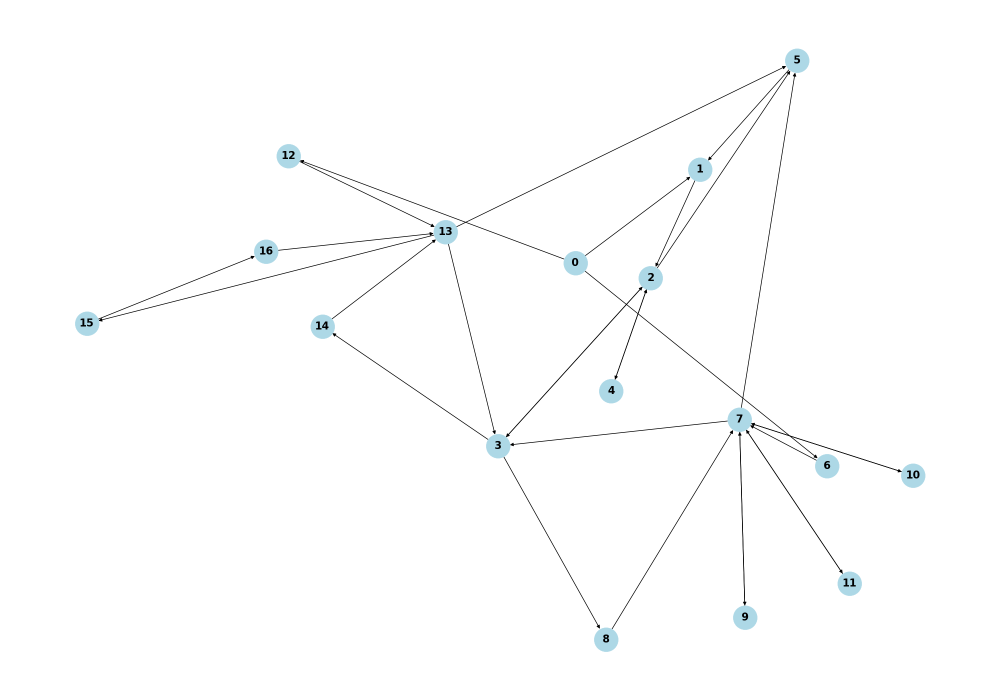

The big ideas for this step have been organizing extracted keywords for use in a custom search engine, and creating graphs for story traversal.
The main technologies used for this step include:
In the last post, I discussed some different algorithms for extracting keywords from a piece of text. Moving forward, I have decided to take more of a TF-IDF approach for dealing with keywords. This will allow a more seamless system for searching through cached events based on relevant terms. By doing this, I am creating a simple search engine, using a streamlined version of Hadoop for speeding up the backend logic and managing events. While it is a bit more work than the previous approaches I have considered, I expect the TF-IDF approach to make things much easier to manage down the road.
I am also researching some other techniques for improving searches. Some examples include fuzzy searching for dealing with words that are similarly written (but not quite exact) and vector similarity based on WordNet to find words with similar meaning. Technologies such as spaCy have useful tools for tackling these types of problems.
TextWorld is a tool created by Microsoft for generating text adventure stories specifically for machine learning applications. It sounds perfect! Unfortunately, I have not been able to get the installation to work on my machine. Looking through the issues on their github page, there's others that have had similar problems. After lots of research and troubleshooting, I have still not been able to get it to work properly. I may go back and try some more workarounds, but for now I am just hoping that the creators take notice and release a fix.
I spent some time actually going through some of the stories on Choose Your Story, this time paying much closer attention to the structure that most of them typically employ. During this, I realized that I have been thinking of these text adventures in a too-specific way. Rather than thinking of these stories as trees, it is better to think of them as more general graphs. This is because doing an action on a given event could very well take the player back to a different event that was previously experienced. Using a tree model, it assumes that the player can only move forward in a story, where they can actually move through the story in a circular fashion depending on how the author designs it.
In addition to playing through a number of stories and drawing out the paths they offer, I also tried making my own for testing purposes. Using the system on Choose Your Story is a bit cumbersome, but works well enough for its purpose. The website does have some fairly strict rules that a story must adhere to before being published, so it will take a bit more effort before I can actually use it for tests. For example, they have a minimum amount of required pages and words that a story must have, and they require your story to be in the editing phase for at least two days before posting. Because of this, I am continuing to carefully design a story that I know inside and out that will fulfill a good amount of test cases before spending too much time creating one that may not even meet the requirements.
Once I realized a graph model would be a better approach (specifically directed graphs), I sought out tools to generate graphs for visualization and model-related training during the scraping phase. The python library NetworkX seems to be a good tool for the job. Rewriting parts of the web scraper and applying the NetworkX functionality, I am able to generate graphs like the following:
For readability, the labels on the graph nodes correspond to the index of the events in the list. As we can see, there are cases where two events go back and forth between each other and cycles are formed. One thing I am working on is finding a good way to also mark what actions are being made to connect any two events, without making the graph look too cluttered.
The final topic I would like to touch on is further readings I have come across. After asking around on some machine learning subreddits, I was pointed toward the work of Mark Riedl. Mr. Riedl has done extensive research on machine learning and AI, and has some publications specifically on story generation. I will be exploring some of his previous work to see if I can get some insight to apply to Project Variegata.
Next steps include making more progress on the event search engine, (hopefully) getting TextWorld to work on my system, getting a good testable story posted to Choose Your Story, and getting a better automated and more in-depth system going for creating story graphs. As always, I will be reading more papers and doing plenty of research to try to discover any other techniques that may make everything go smoother.